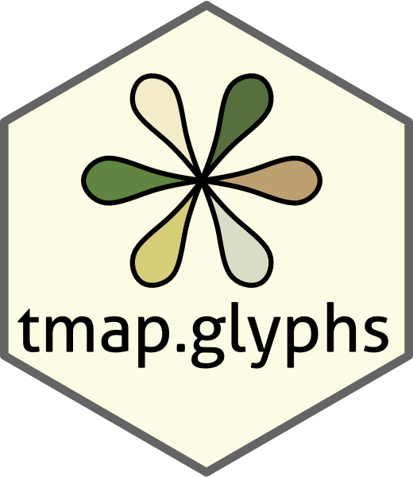

Internal method for tm_scale_multi
Source:R/tmapScaleMulti.R, R/tmapValues_comppart.R
tmapScaleMulti.RdInternal method for tm_scale_multi
Usage
tmapScaleMulti(
...,
scale,
legend,
chart,
o,
aes,
layer,
layer_args,
sortRev,
bypass_ord,
submit_legend = TRUE
)
tmapValuesCheck_multi(x, is_var = TRUE)
tmapValuesIsDiv_multi(x)
tmapValuesRange_multi(x, n, isdiv)
tmapValuesVV_multi(
x,
value.na,
isdiv,
n,
dvalues,
are_breaks,
midpoint,
range,
scale,
rep,
o
)
tmapValuesSubmit_multi(x, args)
tmapValuesScale_multi(x, scale)
tmapValuesColorize_multi(x, pc)
tmapValuesCVV_multi(x, value.na, n, range, scale, rep, o)